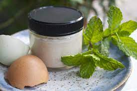

Continued use of nitrogenous fertilizers and biosolids in farming is known to affect the soil pH of the farms leading to acidic environment that promotes solubility, bioavailability and mobility of heavy metals. In addition, these fertilizers also contain residues of heavy metals that accumulate in soils .
Heavy metals and physicochemical parameters cause a great threat to the environment and human health if the levels go beyond allowable limits.
In Bungoma county, the soil is being polluted by the fertilizers used.
These fertilizers are not environmentally friendly.
They sometimes make the crops to have a stunted growth and the leaves to have dark spots.
They make the soil to loose fertility if used for a long time continually.
The eggshells are most widely available
form of calcium supplement.I manufacture fertilizers from rggshells which are environmentally friendly.
They are easy to make and cheap to purchase.
They contain nitrogen and phosphorus which makes plants have a faster growth.
This makes our country to be rich in agriculturally products.
Dental problems
Most of the children in Bukembe constituency suffer from dental problems.
Dental caries is a common disease in children which causes pain with resultant effect on various physiological and social functions.
They are unable to purchase drugs from hospitals because of high prices.
Others are forced to use traditional herbs which sometimes dont work.
I manufacture pastes from eggshells which contain calcium that srenghthen the teeth.
These paste makes the teeth squeaky clean and help fight cavity.
They also get rid of plaque and tartar .
This will help the children to stay with healthy teeth forever.
